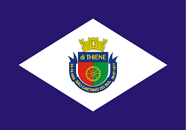

BANDEIRA DE SÃO CAETANO DO SUL

HISTÓRIA DE CIDADE
São Caetano do Sul vem escrevendo história desde a época em que João Ramalho fundou a Vila de Santo André,
em 1553. Neste período, os bandeirantes exploravam o território brasileiro em busca de riquezas naturais.
Foi assim que, no ano de 1671, Fernão Dias Paes Leme, conhecido como “O Caçador de Esmeraldas”, arrematou em
leilão um sítio e o doou aos padres locais: surgiu então a Fazenda de São Caetano.
LOCAIS IMPERDÍVEIS PARA VOCÊ VISITAR EM SÃO CATENANO DO SUL
- Espaço Verde Chico Mendes
- Praça Di Thiene
- Pinacoteca Municipal
- Fábrica de Chocolates Pan
- Igreja Matriz Sagrada Família
- Museu Histórico Municipal de São Caetano do Sul
- Parque Botânico Jânio da Silva Quadros
- Cidade das Crianças
- Restaurantes, lanchonetes e padarias